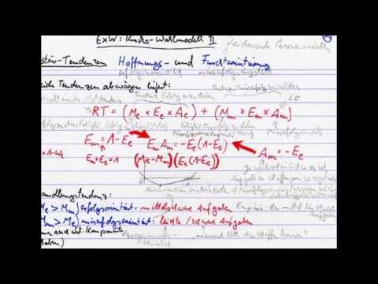
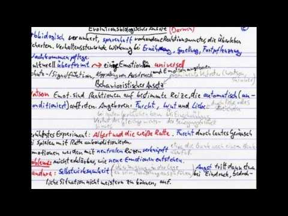

Vor einiger/langer Zeit habe ich Informatik an der Uni Dortmund (heute TU Dortmund) studiert. Damals konnte man dieses Fach noch auf Diplom studieren. Dazu brauchte man auch ein Nebenfach - sozusagen ein Anwendungsgebiet der Informatik. Ich hatte mich damals für Psychologie entschieden. Es erschien mir ein guter Ausgleich zum sehr technischen und mathematischen Fach Informatik. Damit bin ich auch ganz gut gefahren. Konnte ich doch in viele spannende Seminare reinschauen, während sich das Informatikstudium hauptsächlich auf die weniger interaktiven und wenig kommunikativen Vorlesungen konzentrierte.
In dieser Zeit musste ich diverse Prüfungen ablegen und sogar an Versuchen teilnehmen, um Versuchspersonenstunden zu sammeln. Für eine mündliche Prüfung über Motivations und Emotionspsychologie hatte ich mir Karteikarten zum Lernen erstellt und auch eine Erklärung eingesprochen. Das war im Jahr 2005 - das ist also schon lange her. Jetzt habe ich das Material einmal zusammengefasst und in zwei Videos aufgeteilt, die ihr unten sehen könnt.
Mir haben meine Karteikarten damals sehr gut weiter geholfen. Vielleicht sind sie auch für euch interessant. Spannend bei dem Schnitt war auch, dass mir mein zehn Jahre jüngeres Ich in diesem Video noch viele interessante Dinge erzählen konnte, die ich mittlerweile in dieser Detailtiefe gar nicht mehr wusste. :)
 